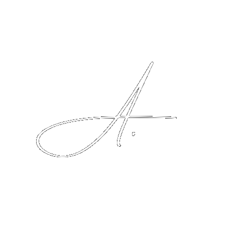

Welcome
ABOUT
ME
"I'm a firm believer that simple is hard. And that design is truly about problem solving and making people's lives better."
My name is Alessia Daria, a passionate graphic & web designer. Within my designs I value simplicity, symmetry and detail. Whether I'm designing books, branding, packaging or websites I always strive for beauty and balance.I'm curious, empathetic, rigorous, and experimental. Through brand strategy and visual development I create everything from books and exhibitions to branding, packaging and digital experince, seeking to own creative excellence at every touch-point.
Explore
